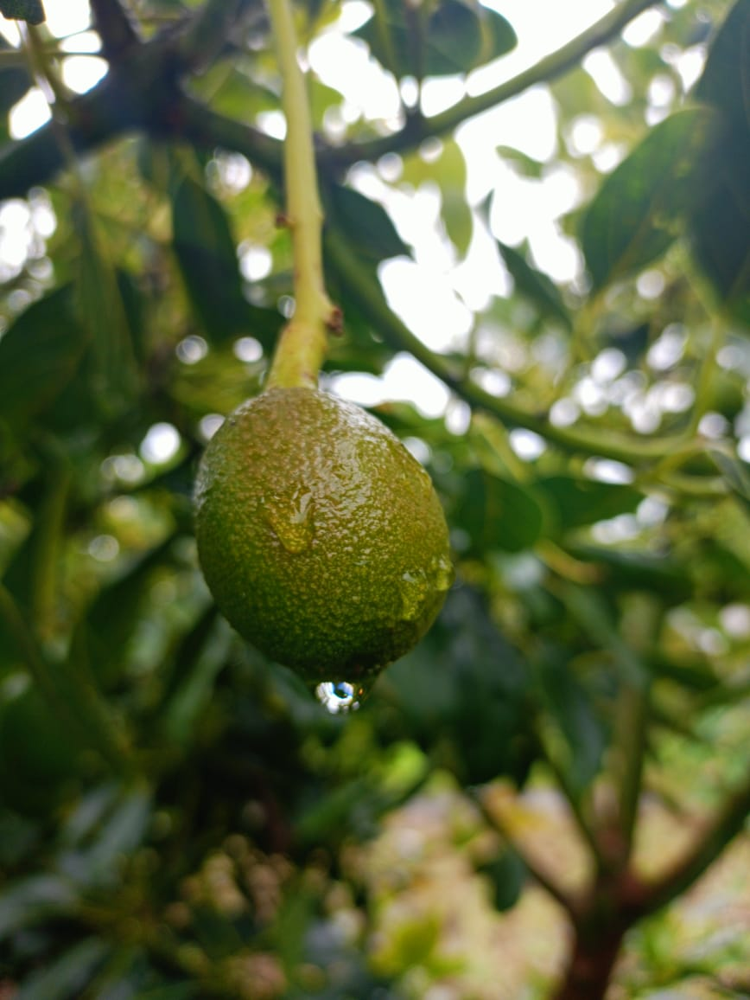
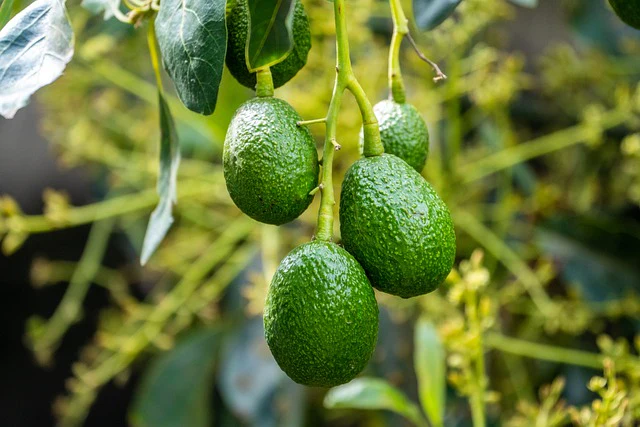
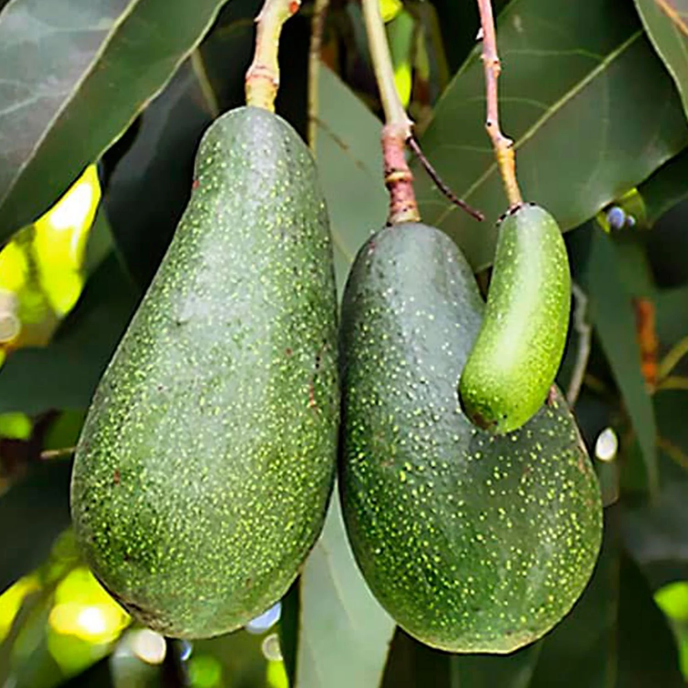

¿Qué es el Aguacate?
El aguacate, conocido científicamente como Persea americana, es una fruta rica en grasas saludables y nutrientes. Originario de Mesoamérica, es apreciado tanto por su sabor cremoso como por sus beneficios para la salud, siendo un ingrediente clave en muchas cocinas alrededor del mundo.
Video obtenido de: AGUACATOSOS
Características Principales
- Fruto con piel verde o negra, dependiendo de la variedad.
- Contiene una pulpa cremosa y un gran hueso en su interior.
- Rico en grasas saludables, vitaminas y minerales.

Variedades de Aguacate
Aguacate Hass
La variedad más popular, con piel rugosa y un sabor rico y cremoso.
Aguacate Fuerte
Con piel más suave y un sabor menos intenso que el Hass.
Aguacate Bacon
Variedad de temporada con un sabor suave y una piel verde claro.
Cultivo del Aguacate
| Aspecto | Descripción |
|---|---|
| Clima | Prefiere climas cálidos y soleados, con temperaturas que no bajen de 0 °C. |
| Suelo | Necesita suelos bien drenados, ricos en materia orgánica y ligeramente ácidos. |
| Riego | Requiere un suministro regular de agua, evitando el encharcamiento. |
| Plagas y Enfermedades | Puede ser susceptible a plagas como la mosca de la fruta y enfermedades fúngicas. |
| Recolección | Los frutos se cosechan cuando están en su punto de madurez, generalmente a mano. |